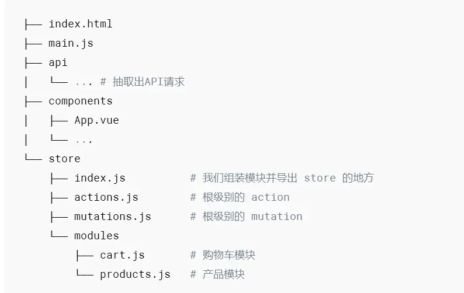

Vuex 是一个专为 Vue.js 应用程序开发的状态管理模式，全局数据，兄弟组件共用的数据一般可以放在state中，主要有以下核心
- State
- Getter
- Mutation
- Action
- Module
state
state是数据源，有人把state比喻为数据库，用来管理数据的地方
Getter
Getter比喻为API，是用来过滤数据，或者说一般不直接操作state(当然也是可以的)，而是去通过getter函数获得数据
Mutaion
Mutation 提交状态修改。也就是set、get中的set，这是vuex中唯一修改state的方式，但不支持异步操作。第一个参数默认是state。
外部调用方式：store.commit(‘SET_AGE’, arg)。和vue中的methods类似。
actions
actions：和mutations类似。不过actions支持异步操作。第一个参数默认是和store具有相同参数属性的对象。
外部调用方式：store.dispatch(‘nameAsyn’)。
modules
modules：store的子模块，内容就相当于是store的一个实例。调用方式和前面介绍的相似，只是要加上当前子模块名，如：store.a.getters.xxx()。
项目组织结构

我的index.js文件
1
2
3
4
5
6
7
8
9
10
11
12
13
14
15
16
17
18
19
20
21
22
23
| import Vue from 'vue'
import Vuex from 'vuex'
Vue.use(Vuex)
import actions from './actions.js'
import mutations from './mutations.js'
const state={
notes:[], //notes列表
activeNote:{} //一个当前note对象
}
const getters={
/*
Getters接收state作为其第一个参数
*/
notes:state=>state.notes,
//相当于notes:function(state){return state.notes}
activeNote:state=>state.activeNote
}
export default new Vuex.Store({
state,
mutations,
actions,
getters
})
|
action.js文件
1
2
3
4
5
6
7
8
9
10
11
12
| const actions={
addNote({commit}){
commit('ADD_NOTE')
},
editNote({commit},text){
commit('EDIT_NOTE',text)
},
deleteNote({commit}){
commit('DELETE_NOTE')
}
}
export default actions
|
mutataion.js文件
1
2
3
4
5
6
7
8
9
10
11
12
13
14
15
16
17
18
19
20
21
22
23
24
25
26
27
28
29
| const mutations={
//添加笔记
ADD_NOTE(state){
const newNote = {
/*
text:默认文字内容
favorite:收藏
*/
text:"new Note",
favorite:false
}
state.notes.push(newNote)
state.activeNote = newNote
},
//编辑笔记
EDIT_NOTE(state,text){ //编辑笔记
state.activeNote.text=text
},
//删除笔记
DELETE_NOTE(state){
for (var i=0; i<state.notes.length; i++){
if (state.notes[i] == state.activeNote){
state.notes.splice(i, 1)
}
}
state.activeNote = state.notes[0]
}
}
export default mutations
|
main.js文件
1
2
3
4
5
6
7
8
9
10
11
12
13
| import Vue from 'vue'
import App from './App'
import router from './router'
import store from './store/index.js'
Vue.config.productionTip = false
/* eslint-disable no-new */
new Vue({
el: '#app',
router,
store,//使用store
components: { App },
template: '<App/>'
})
|
vuex的文件中类似这样书写，mutation是同步的，提交数据，store.commit(‘add’, arg),action是操作mutation的,store.dispatch(‘add’)